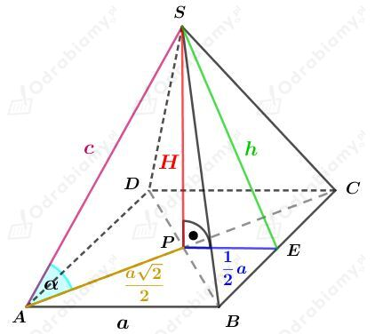
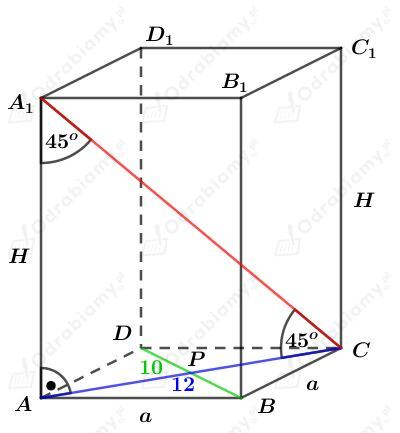
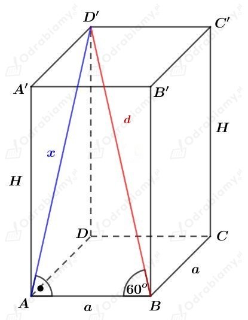
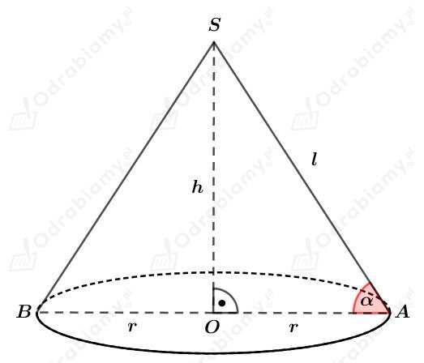
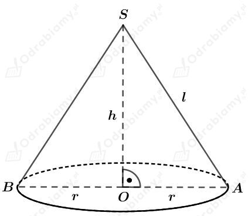
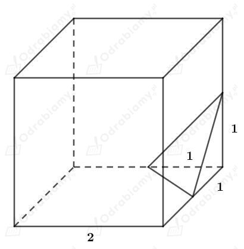
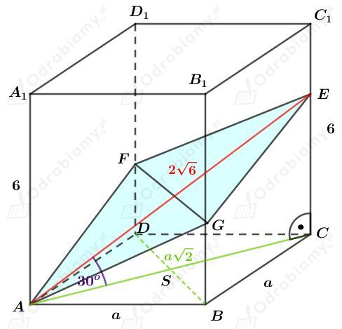

Rysunek:

Pole powierzchni ściany bocznej tego ostrosłupa jest równe polu powierzchni jego podstawy. Mamy stąd:
Korzystając z twierdzenia Pitagorasa dla trójkąta PES mamy:
Korzystając z twierdzenia Pitagorasa dla trójkąta APS mamy:
Wyznaczmy sinus kąta nachylenia krawędzi bocznej do podstawy tego ostrosłupa. Mamy:
Rysunek:
Rozważmy trójkąt prostokątny GPS. Korzystając ze związku między długościami boków w trójkącie o kątach 30o, 60o, 90o mamy:
oraz
Odcinek hp jest wysokością trójkąta równobocznego o boku długości a. Mamy stąd więc:
Wyznaczmy pole powierzchni podstawy tego ostrosłupa. Korzystając ze wzoru na pole trójkąta równobocznego mamy:
Wyznaczmy objętość tego ostrosłupa. Mamy:
Rysunek:

Korzystając z twierdzenia Pitagorasa dla trójkąta ADC otrzymujemy:
Wyznaczmy pole trójkąta ABC. Mamy:
Niech R będzie długością promienia okręgu opisanego na trójkącie ABC. Pole tego trójkąta możemy również zapisać jako:
Porównując otrzymane pola mamy:
Odcinek OC jest promieniem okręgu opisanego na trójkącie ABC. Mamy stąd:
Wyznaczmy tangens kąta nachylenia ściany ABS do podstawy tego ostrosłupa. Mamy:
Rysunek:

Zauważmy, że trójkąt ACA1 jest równoramiennym trójkątem prostokątnym, więc
Podstawą tego graniastosłupa jest romb o boku długości a. Wyznaczmy długość boku tego rombu. Korzystając z twierdzenia Pitagorasa dla trójkąta APB mamy:
Wyznaczmy pole powierzchni podstawy tego graniastosłupa. Korzystając ze wzoru na pole rombu mamy:
Wyznaczmy pole powierzchni bocznej tego graniastosłupa. Mamy:
Wyznaczmy pole powierzchni całkowitej tego graniastosłupa. Mamy:
Rysunek:

Rozważmy trójkąt prostokątny ABD'. Korzystając ze związku między długościami boków w trójkącie o kątach 30o, 60o, 90o mamy:
oraz
Korzystając z twierdzenia Pitagorasa dla trójkąta AD'A' mamy:
Obliczmy objętość tego graniastosłupa. Mamy:
Dany jest walec o wysokości długości h i taki, że jego podstawą jest koło o promieniu długości r.
Powierzchnia boczna tego walca jest kwadratem, więc
Objętość tego walca jest równa V. Mamy stąd:
Wiedząc, że r=h/2𝜋 mamy:
Rysunek:

Z treści zadania wiemy, że stosunek pola powierzchni bocznej stożka do jego pola powierzchni jego podstawy jest równy √2:1. Mamy stąd:
czyli
Korzystając z twierdzenia Pitagorasa dla trójkąta OAS mamy:
Zatem trójkąt prostokątny OAS jest trójkątem równoramiennym, czyli
Wyznaczmy objętość kuli o średnicy długości 6, czyli o promieniu długości 3. Mamy:
Wiedząc, że objętość danego stożka jest równa objętości tej kuli mamy:
Wiedząc, że h=r mamy:
Rysunek:

Pole powierzchni podstawy tego stożka wynosi 16, więc mamy:
Pole powierzchni bocznej tego stożka wynosi 20, więc mamy:
Korzystając z twierdzenia Pitagorasa dla trójkąta OAS mamy:
Wyznaczmy objętość tego stożka. Mamy:
Dany jest sześcian o krawędzi długości 2. Objętość tego sześcianu wynosi
Od tego sześcianu odcięto naroża, zawierające po jednym wierzchołku, płaszczyznami przechodzącymi przez środki krawędzi wychodzących z tych wierzchołków.
Rysunek tego sześcianu z jednym odciętym narożem:

Wyznaczmy objętość ostrosłupa będącego odciętym narożem. Mamy:
Od tego sześcianu odcięto w ten sposób osiem naroży.
Wyznaczmy objętość tak otrzymanego wielościanu. Mamy:
Rysunek:

a)
Wyznaczmy długość krawędzi podstawy a tego prostopadłościanu.
Rozważmy trójkąt prostokątny ACE. Korzystając z definicji funkcji cosinus mamy:
czyli
b)
Wyznaczmy objętość tego prostopadłościanu. Mamy: